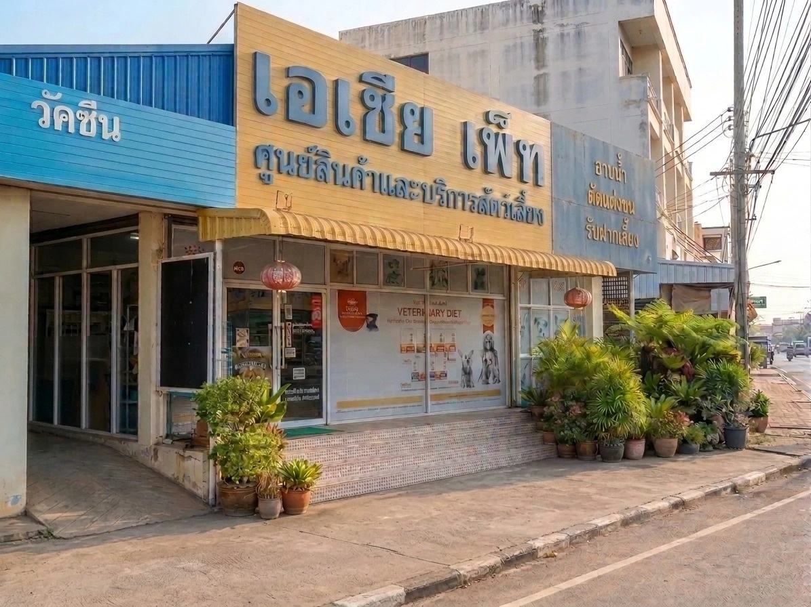

เอเชียเพ็ท อยู่ที่ 320/12 ถ.สายเอเชีย ต.นครสวรรค์ตก อ.เมืองนครสวรรค์ เปิดทุกวันไม่มีวันหยุด 09:00–20:00 น. แนะนำให้จองคิวล่วงหน้า รับตรวจตั้งแต่สุนัขแมว ไปจนถึงกระต่าย หนู นก และสัตว์พิเศษ (Exotic) ที่หลายที่ไม่รับ
สุนัข · แมว · กระต่าย · หนู แฮมสเตอร์ ชินชิล่า · นก · ไก่และสัตว์ปีก · สัตว์พิเศษ (Exotic) — กดดูรายชนิดได้
เอกซเรย์ · อัลตราซาวด์ · กล้องส่องตรวจ · ตู้ออกซิเจน · เครื่องพ่นยา · ห้องแล็บในคลินิก
เปิดทุกวัน 09:00–20:00 น. แนะนำให้จองคิวล่วงหน้า เพราะถ้าเดินเข้ามาเลยอาจไม่มีคิวว่างและต้องรอ จองได้ทางฟอร์มในเว็บ LINE หรือโทร 086 119 9349
ทุกท่านมีใบอนุญาตประกอบวิชาชีพการสัตวแพทย์จากสัตวแพทยสภา ตรวจสอบเลขที่ได้
สัตวแพทย์ประจำคลินิก
สัตวแพทย์ประจำคลินิก
ตอนนี้ทำอะไรได้แล้วบ้าง และกำลังจะเพิ่มอะไร — เราอัปเดตตรงนี้ไว้ให้ดูตามจริง
ตรวจรักษา ฉีดวัคซีน ผ่าตัด ทำหมัน และทันตกรรม พร้อมห้องแล็บในคลินิก
มีแล้ว: เอกซเรย์ อัลตราซาวด์ กล้องส่องตรวจ ตู้ออกซิเจน และเครื่องพ่นยา
กำลังจะเพิ่ม: อัลตราซาวด์หัวใจ (Echo), CT และ MRI เพื่อวินิจฉัยเคสหัวใจ ระบบประสาท และเนื้องอกได้ละเอียดขึ้น
ขยายเป็นโรงพยาบาลสัตว์เต็มรูปแบบ มีสวนให้น้องวิ่งเล่น และสระว่ายน้ำสำหรับออกกำลังกายและกายภาพบำบัดหลังผ่าตัดหรือมีปัญหาข้อ